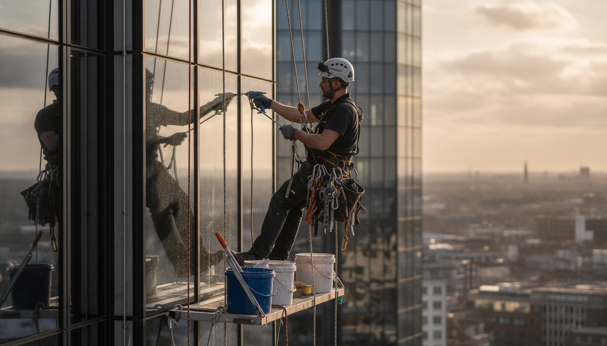
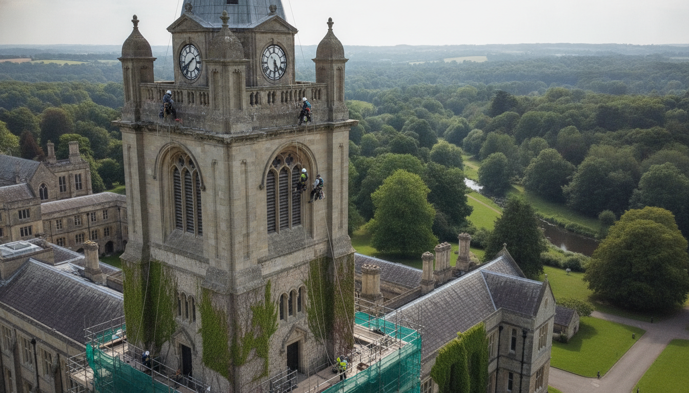

What the ropes open up.
Technicians reach concrete, glass, steel and masonry for the jobs that do not need a full scaffold — and for the ones that cannot wait for one.
-
Inspections and surveys
Concrete, paint, masonry and steel. Notes and photographs on water ingress, corrosion and loose material.
-
Cleaning and maintenance
Windows, pressure and soft washing, canopies, ducting, gutters and vegetation at height.
-
Painting and coatings
Protective coatings on steel, masonry, timber, cladding, silos, balconies and waterproofing systems.
-
Glazing, cladding and signs
Curtain walling, high-level glass, cladding, banners, signs and electrical work from the rope.

Close to the surface.
Elite Abseiling provides height safety and industrial rope access across the UK. Technicians are fully qualified, work within IRATA guidelines, and have rescue experience.
Operatives also hold PTS, CSCS, confined-space and chainsaw qualifications. Equipment is certified and inspected regularly in line with UK law. Work is carried out in safe and clean conditions.
How the company worksActive since 2017. More than 100 projects. More than 100 clients.
City glass. Heritage stone. Difficult access.
From commercial façades to clock towers and estates, the crew works wherever rope access is the safer, faster route to the face of the building.
Call with the site address, the material, and how high the work sits. Elite Abseiling will say what the ropes can take on — and what belongs elsewhere.
